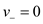
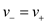
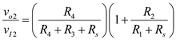
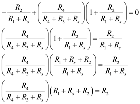

Refer to Figure 2.16 in the textbook for a differential amplifier.
Connect a resistance,  in series with each of the inputs, .
in series with each of the inputs, .
Draw the modified circuit.
Refer to Figure 2.16 in the textbook for a differential amplifier.
Connect a resistance, in series with each of the inputs, .
Draw the modified circuit.
Apply super position principle on the circuit.
Assume the voltage source,  , to find the expression for the inverting gain.
, to find the expression for the inverting gain.
Due to virtual ground concept, the voltages at inverting and non-inverting terminals are same. Hence, . Therefore,
Assume the voltage source, , to find the expression for the non-inverting gain.
Due to virtual ground concept, the voltages at inverting and non-inverting terminals are same. Hence, . Therefore,
The voltage at non-inverting terminal due to voltage division is,
Therefore,

Consider that the circuit is an ideal differential amplifier. Therefore,  .
.
Combine the two configuration gains together.

Consider that . Therefore,
Therefore, the condition for the ideal differential amplifier is, .